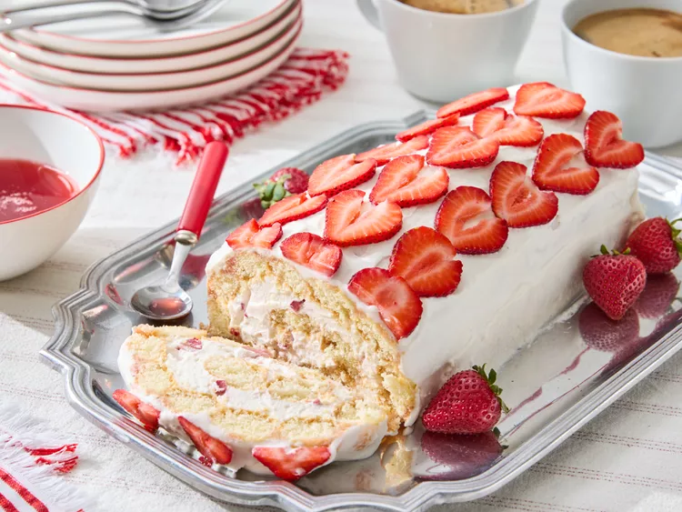

home
Strawberry Tiramisu Roll

Deskripsi
Tiramisu stroberi ini adalah variasi tiramisu yang cantik, lezat, dan menyenangkan. Lapisan spiral krim mascarpone dan ladyfingers terungkap saat diiris. Gunakan buah beri yang matang dan paling berair yang dapat Anda temukan untuk rasa terbaik.
Bahan
- 1 pound stroberi, dikupas dan diiris.
- 1/2 cangkir air.
- 3/4 cangkir gula putih.
- 1 sendok makan jus lemon.
- 1 cangkir krim kental.
- 8 ons keju mascarpone yang sudah dilunakkan.
- 1/2 cangkir gula halus.
- 1/4 cangkir sirup stroberi.
- 1 sendok teh ekstrak vanilla.
Langkah
- Kumpulkan semua bahan.
- Untuk sirup stroberi, masukkan irisan stroberi dan air ke dalam panci di atas api sedang-tinggi. Dengan menggunakan penghancur kentang atau garpu, hancurkan buah beri. Didihkan buah beri, lalu kecilkan api menjadi sedang-rendah dan didihkan sekitar 5 menit.
- Angkat panci dari api. Tuang buah beri ke dalam saringan halus yang diletakkan di atas gelas ukur kaca. Dengan menggunakan bagian belakang sendok atau sendok, tekan padatan berry untuk memeras jus sebanyak mungkin (Anda harus memiliki sekitar 1 1/4 cangkir jus). Buang padatan.
- Kembalikan jus stroberi ke dalam wajan, dan tambahkan gula putih dan jus lemon. Didihkan, aduk untuk melarutkan gula. Kecilkan api dan didihkan sampai adonan sedikit mengental, 10 hingga 15 menit. Angkat dari api dan pindahkan ke mangkuk; Tutup dan dinginkan sirup stroberi sampai dingin, sekitar 1 jam.
- Untuk krim mascarpone, kocok krim kental dalam mangkuk dengan mixer listrik dengan api sedang sampai terbentuk puncak yang kaku. Kocok mascarpone, gula halus, cangkir Sirup Stroberi, dan vanila dalam mangkuk terpisah dengan mixer hingga rata. Lipat krim kocok. Pindahkan 1 cangkir krim mascarpone ke mangkuk; tutup dan dinginkan sampai siap digunakan.
- Dari sisa 1 pon stroberi, potong buah beri secukupnya menjadi potongan-potongan inci untuk mengukur 3/4 cangkir. Lipat stroberi cincang ke dalam sisa campuran krim mascarpone. Simpan sisa stroberi untuk menghias gulungan kue.
- Untuk merakit, lapisi loyang berukuran 15x10 inci dengan bungkus plastik, biarkan sekitar 6 inci bungkus memanjang melewati ujung loyang yang pendek. Celupkan 12 ladyfingers, satu per satu, ke dalam sisa Sirup Stroberi untuk melapisi dan atur berdampingan memanjang dalam baris rapat yang menutupi sisi kiri panjang wajan. Ulangi dengan 12 jari kepik yang tersisa untuk menutupi separuh panci lainnya, pastikan semua jari kepin bersentuhan rapat dan tidak ada celah. Tutup dan dinginkan sirup yang tersisa untuk disajikan.
- Oleskan krim mascarpone yang berisi stroberi cincang secara merata di atas ladyfingers.
- Dengan menggunakan bungkus plastik di salah satu ujung pendek wajan, gulung persegi panjang ladyfinger yang telah diisi dengan hati-hati menjadi batang kayu. Bungkus batang kayu dengan rapat dengan bungkus plastik dan gulung perlahan untuk membentuk bentuk silinder yang merata. Tempatkan gulungan di lemari es dan dinginkan setidaknya 4 jam atau hingga semalaman.
- Untuk menyajikan, buka bungkus gulungan dengan hati-hati dan letakkan di atas piring saji. Oleskan krim mascarpone yang sudah dipesan di atas gulungan untuk melapisi. Iris stroberi yang tersisa dan gunakan untuk menghias bagian luar gulungan.
- Iris gulungan dan sajikan dengan sisa Sirup Stroberi.